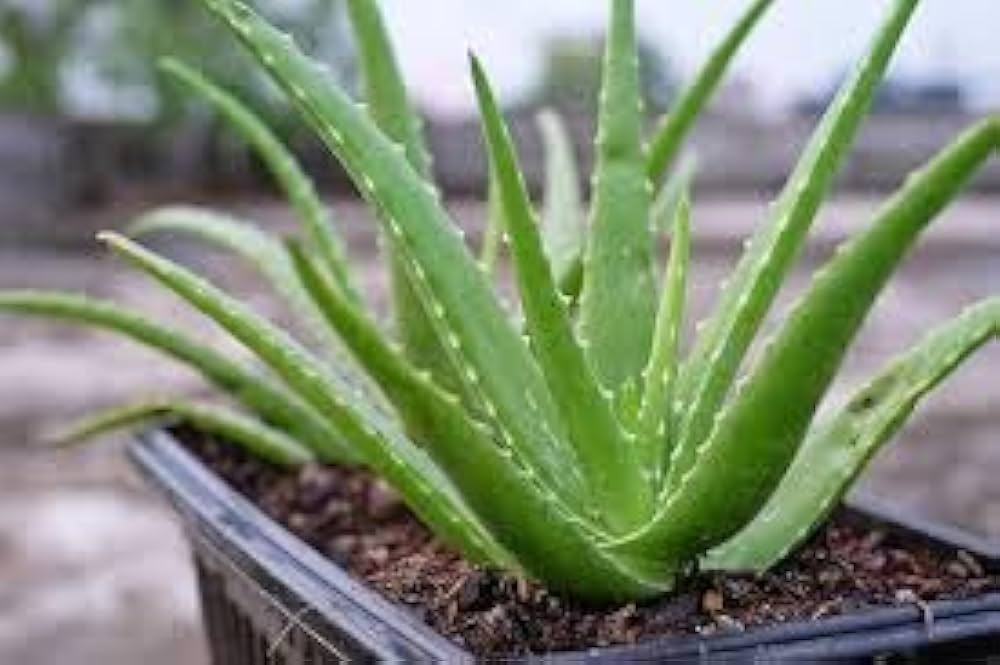
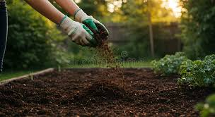
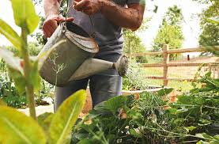

Growing herbal plants at home is simple and rewarding when you follow the right steps. This guide will help you understand how to grow plants efficiently using proper soil, watering techniques, and sunlight management.
Start by selecting herbal plants that suit your environment and experience level. Beginners can choose plants like Tulsi, Mint, or Aloe Vera as they are easy to grow and require less maintenance. Always consider sunlight, space, and climate before selecting your plant to ensure better growth and long-term sustainability.

Soil preparation is a crucial step in plant growth. Use nutrient-rich soil mixed with organic compost to improve fertility. Ensure proper drainage to avoid water stagnation, which can damage roots. Well-prepared soil allows plants to absorb nutrients efficiently and grow strong and healthy.

Watering should be done carefully to maintain soil moisture. Avoid overwatering, as it can cause root rot, and avoid underwatering, which can dry the plant. Check soil moisture before watering. Early morning watering is recommended for better absorption and plant health.

Sunlight is essential for photosynthesis, helping plants produce energy. Most herbal plants require at least 4 to 6 hours of sunlight daily. Place your plants in a location where they receive sufficient natural light, such as balconies, terraces, or near windows.